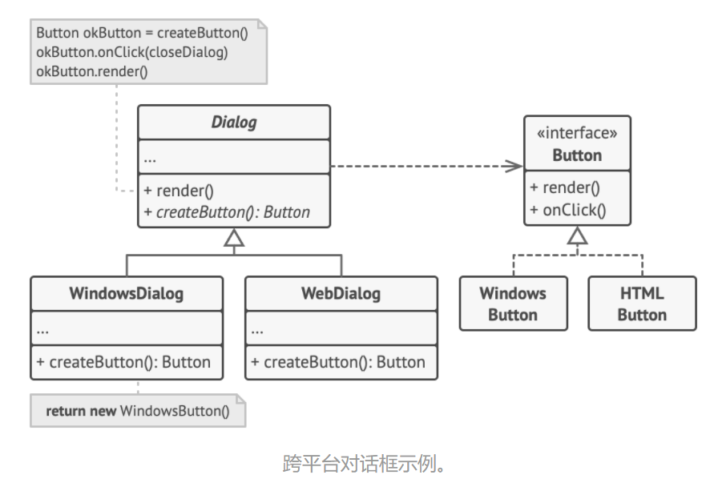
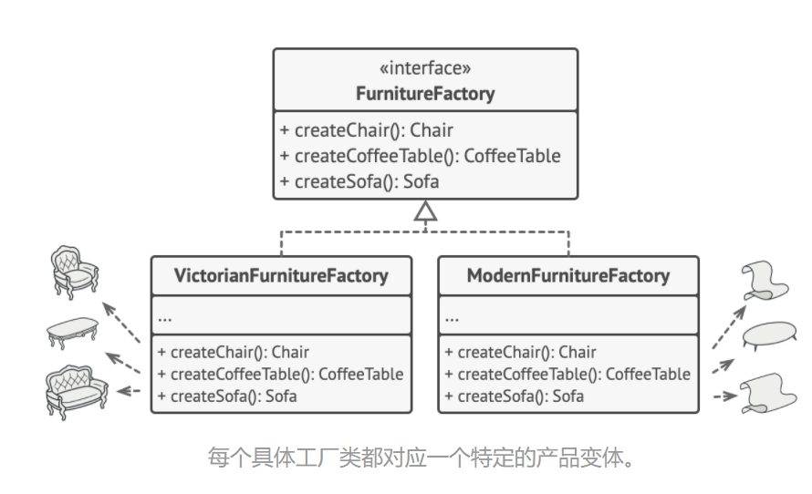
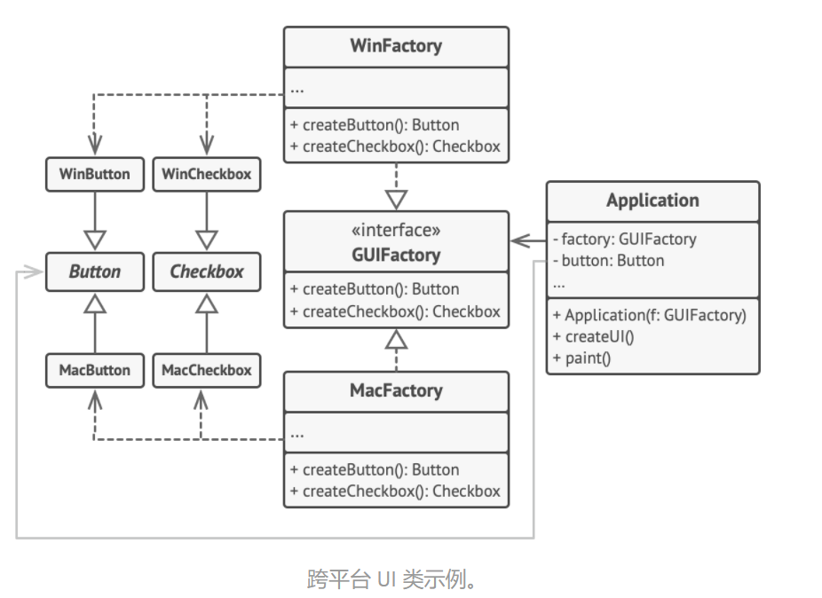
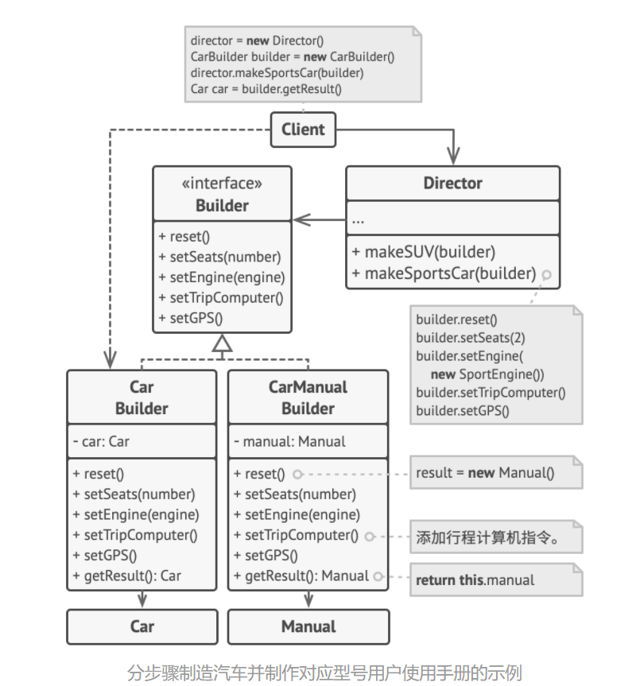

# 1. 工厂模式
简而言之，一个部门对一个产品进行包装，产品本身可由乙方进行拓展修改，甲方对部门进行通知需求调用。
应用背景：对 UI 中的按钮进行工厂模式生成与应用。

伪代码：
// 创建者类声明的工厂方法必须返回一个产品类的对象。创建者的子类通常会提供 | |
// 该方法的实现。 | |
class Dialog is | |
// 创建者还可提供一些工厂方法的默认实现。 | |
abstract method createButton():Button | |
// 请注意，创建者的主要职责并非是创建产品。其中通常会包含一些核心业务 | |
// 逻辑，这些逻辑依赖于由工厂方法返回的产品对象。子类可通过重写工厂方 | |
// 法并使其返回不同类型的产品来间接修改业务逻辑。 | |
method render() is | |
// 调用工厂方法创建一个产品对象。 | |
Button okButton = createButton() | |
// 现在使用产品。 | |
okButton.onClick(closeDialog) | |
okButton.render() | |
// 具体创建者将重写工厂方法以改变其所返回的产品类型。 | |
class WindowsDialog extends Dialog is | |
method createButton():Button is | |
return new WindowsButton() | |
class WebDialog extends Dialog is | |
method createButton():Button is | |
return new HTMLButton() | |
// 产品接口中将声明所有具体产品都必须实现的操作。 | |
interface Button is | |
method render() | |
method onClick(f) | |
// 具体产品需提供产品接口的各种实现。 | |
class WindowsButton implements Button is | |
method render(a, b) is | |
// 根据 Windows 样式渲染按钮。 | |
method onClick(f) is | |
// 绑定本地操作系统点击事件。 | |
class HTMLButton implements Button is | |
method render(a, b) is | |
// 返回一个按钮的 HTML 表述。 | |
method onClick(f) is | |
// 绑定网络浏览器的点击事件。 | |
class Application is | |
field dialog: Dialog | |
// 程序根据当前配置或环境设定选择创建者的类型。 | |
method initialize() is | |
config = readApplicationConfigFile() | |
if (config.OS == "Windows") then | |
dialog = new WindowsDialog() | |
else if (config.OS == "Web") then | |
dialog = new WebDialog() | |
else | |
throw new Exception("错误！未知的操作系统。") | |
// 当前客户端代码会与具体创建者的实例进行交互，但是必须通过其基本接口 | |
// 进行。只要客户端通过基本接口与创建者进行交互，你就可将任何创建者子 | |
// 类传递给客户端。 | |
method main() is | |
this.initialize() | |
dialog.render() |
实际代码：
https://refactoringguru.cn/design-patterns/factory-method/java/example
# 使用场景
- 无法预知对象确切类别及其依赖关系时，可使用
- 希望用户能拓展你的软件库或框架的内部组件，可使用
- 希望服用现有对象来节省系统资源，而不是每次都重新创建，可使用
优点：
- 单一职责
- 开闭原则
- 避免创建者与具体产品之间的耦合
缺点：
应用工厂方法模式需要引入许多新的子类， 代码可能会因此变得更复杂。
# 2. 抽象工厂模式
简而言之，抽象工厂更多的是对多对多的关系。
以一个家具生产为例：
| 抽象工厂对象 | 抽象工厂对象具有的方法 | 产品 | 产品风格 | 产品对象所具有的方法 |
|---|---|---|---|---|
| 家具生产部门 | 生产椅子 | 椅子 | 维多利亚风、法式、中式 | sitOn |
| 生产桌子 | 桌子 | 维多利亚风、法式、中式 | putOn | |
| 生产沙发 | 沙发 | 维多利亚风、法式、中式 | sitOn |
抽象工厂中的产品以及产品特点，不再是如工厂模式中一对一的特点，即一个工厂只能创建一个产品。想要实现多个产品的创建，同时对这些产品进行不同风格的改造，这就是抽象工厂模式要解决的问题。

在上述表格中，家具部门表示一个抽象工厂，属于一个接口类，这个部门的任务分工为生产椅子、生产桌子、生产沙发。当一个客户过来告诉这个部门说：“给我做个椅子。” 此时由部门通知对应的技术人员去生产对应的家具，同时还叫包装人员对家具的风格进行改造。
每个技术人员都只能返回特定类别的产品， 例如， 制作现代风格的技术人员 ModernFurnitureFactory 只能创建 现代椅子 ModernChair 、 现代沙发 ModernSofa 和 现代咖啡桌 ModernCoffeeTable 对象。
注：
* 家具部门 ==interface 抽象工厂类
* 技术人员 == implement 家具部门接口
* 包装人员 == 对 product 进行重写
应用背景：

伪代码：
// 抽象工厂接口声明了一组能返回不同抽象产品的方法。这些产品属于同一个系列 | |
// 且在高层主题或概念上具有相关性。同系列的产品通常能相互搭配使用。系列产 | |
// 品可有多个变体，但不同变体的产品不能搭配使用。 | |
interface GUIFactory is | |
method createButton():Button | |
method createCheckbox():Checkbox | |
// 具体工厂可生成属于同一变体的系列产品。工厂会确保其创建的产品能相互搭配 | |
// 使用。具体工厂方法签名会返回一个抽象产品，但在方法内部则会对具体产品进 | |
// 行实例化。 | |
class WinFactory implements GUIFactory is | |
method createButton():Button is | |
return new WinButton() | |
method createCheckbox():Checkbox is | |
return new WinCheckbox() | |
// 每个具体工厂中都会包含一个相应的产品变体。 | |
class MacFactory implements GUIFactory is | |
method createButton():Button is | |
return new MacButton() | |
method createCheckbox():Checkbox is | |
return new MacCheckbox() | |
// 系列产品中的特定产品必须有一个基础接口。所有产品变体都必须实现这个接口。 | |
interface Button is | |
method paint() | |
// 具体产品由相应的具体工厂创建。 | |
class WinButton implements Button is | |
method paint() is | |
// 根据 Windows 样式渲染按钮。 | |
class MacButton implements Button is | |
method paint() is | |
// 根据 macOS 样式渲染按钮 | |
// 这是另一个产品的基础接口。所有产品都可以互动，但是只有相同具体变体的产 | |
// 品之间才能够正确地进行交互。 | |
interface Checkbox is | |
method paint() | |
class WinCheckbox implements Checkbox is | |
method paint() is | |
// 根据 Windows 样式渲染复选框。 | |
class MacCheckbox implements Checkbox is | |
method paint() is | |
// 根据 macOS 样式渲染复选框。 | |
// 客户端代码仅通过抽象类型（GUIFactory、Button 和 Checkbox）使用工厂 | |
// 和产品。这让你无需修改任何工厂或产品子类就能将其传递给客户端代码。 | |
class Application is | |
private field factory: GUIFactory | |
private field button: Button | |
constructor Application(factory: GUIFactory) is | |
this.factory = factory | |
method createUI() is | |
this.button = factory.createButton() | |
method paint() is | |
button.paint() | |
// 程序会根据当前配置或环境设定选择工厂类型，并在运行时创建工厂（通常在初 | |
// 始化阶段）。 | |
class ApplicationConfigurator is | |
method main() is | |
config = readApplicationConfigFile() | |
if (config.OS == "Windows") then | |
factory = new WinFactory() | |
else if (config.OS == "Mac") then | |
factory = new MacFactory() | |
else | |
throw new Exception("错误！未知的操作系统。") | |
Application app = new Application(factory) |
实际代码：
https://refactoringguru.cn/design-patterns/abstract-factory/java/example
# 使用场景
- 代码需要与多个不同系列的相关产品进行交互，但是由于无法提前获取相关信息，或者处于对未来拓展性的考虑，你不希望代码基于产品的具体类进行构建，可使用
- 有一组基于抽象方法的类，且主要功能不明确，可使用
优点:
- 确保同一工厂生产的产品相互匹配
- 避免客户端与具体产品代码的耦合
- 单一职责
- 开闭原则
缺点：由于采用该模式需要向应用中引入众多接口和类， 代码可能会比之前更加复杂。
# 3. 生成器模式
简而言之，生成器模式相较于上述两种方法，多了一个管理制度 -- 即主管管理制。当客户有业务需求时，会与首先与主管进行交涉，而后，主管将设定好每一个阶段该做什么事情，定好项目执行流程，然后通知技术人员进行项目实施，最后将有技术人员返还相应的产品。
例子如下：

伪代码：
// 只有当产品较为复杂且需要详细配置时，使用生成器模式才有意义。下面的两个 | |
// 产品尽管没有同样的接口，但却相互关联。 | |
class Car is | |
// 一辆汽车可能配备有 GPS 设备、行车电脑和几个座位。不同型号的汽车（ | |
// 运动型轿车、SUV 和敞篷车）可能会安装或启用不同的功能。 | |
class Manual is | |
// 用户使用手册应该根据汽车配置进行编制，并介绍汽车的所有功能。 | |
// 生成器接口声明了创建产品对象不同部件的方法。 | |
interface Builder is | |
method reset() | |
method setSeats(...) | |
method setEngine(...) | |
method setTripComputer(...) | |
method setGPS(...) | |
// 具体生成器类将遵循生成器接口并提供生成步骤的具体实现。你的程序中可能会 | |
// 有多个以不同方式实现的生成器变体。 | |
class CarBuilder implements Builder is | |
private field car:Car | |
// 一个新的生成器实例必须包含一个在后续组装过程中使用的空产品对象。 | |
constructor CarBuilder() is | |
this.reset() | |
//reset（重置）方法可清除正在生成的对象。 | |
method reset() is | |
this.car = new Car() | |
// 所有生成步骤都会与同一个产品实例进行交互。 | |
method setSeats(...) is | |
// 设置汽车座位的数量。 | |
method setEngine(...) is | |
// 安装指定的引擎。 | |
method setTripComputer(...) is | |
// 安装行车电脑。 | |
method setGPS(...) is | |
// 安装全球定位系统。 | |
// 具体生成器需要自行提供获取结果的方法。这是因为不同类型的生成器可能 | |
// 会创建不遵循相同接口的、完全不同的产品。所以也就无法在生成器接口中 | |
// 声明这些方法（至少在静态类型的编程语言中是这样的）。 | |
// | |
// 通常在生成器实例将结果返回给客户端后，它们应该做好生成另一个产品的 | |
// 准备。因此生成器实例通常会在 `getProduct（获取产品）` 方法主体末尾 | |
// 调用重置方法。但是该行为并不是必需的，你也可让生成器等待客户端明确 | |
// 调用重置方法后再去处理之前的结果。 | |
method getProduct():Car is | |
product = this.car | |
this.reset() | |
return product | |
// 生成器与其他创建型模式的不同之处在于：它让你能创建不遵循相同接口的产品。 | |
class CarManualBuilder implements Builder is | |
private field manual:Manual | |
constructor CarManualBuilder() is | |
this.reset() | |
method reset() is | |
this.manual = new Manual() | |
method setSeats(...) is | |
// 添加关于汽车座椅功能的文档。 | |
method setEngine(...) is | |
// 添加关于引擎的介绍。 | |
method setTripComputer(...) is | |
// 添加关于行车电脑的介绍。 | |
method setGPS(...) is | |
// 添加关于 GPS 的介绍。 | |
method getProduct():Manual is | |
// 返回使用手册并重置生成器。 | |
// 主管只负责按照特定顺序执行生成步骤。其在根据特定步骤或配置来生成产品时 | |
// 会很有帮助。由于客户端可以直接控制生成器，所以严格意义上来说，主管类并 | |
// 不是必需的。 | |
class Director is | |
private field builder:Builder | |
// 主管可同由客户端代码传递给自身的任何生成器实例进行交互。客户端可通 | |
// 过这种方式改变最新组装完毕的产品的最终类型。 | |
method setBuilder(builder:Builder) | |
this.builder = builder | |
// 主管可使用同样的生成步骤创建多个产品变体。 | |
method constructSportsCar(builder: Builder) is | |
builder.reset() | |
builder.setSeats(2) | |
builder.setEngine(new SportEngine()) | |
builder.setTripComputer(true) | |
builder.setGPS(true) | |
method constructSUV(builder: Builder) is | |
// ... | |
// 客户端代码会创建生成器对象并将其传递给主管，然后执行构造过程。最终结果 | |
// 将需要从生成器对象中获取。 | |
class Application is | |
method makeCar() is | |
director = new Director() | |
CarBuilder builder = new CarBuilder() | |
director.constructSportsCar(builder) | |
Car car = builder.getProduct() | |
CarManualBuilder builder = new CarManualBuilder() | |
director.constructSportsCar(builder) | |
// 最终产品通常需要从生成器对象中获取，因为主管不知晓具体生成器和 | |
// 产品的存在，也不会对其产生依赖。 | |
Manual manual = builder.getProduct() |
实际代码：
https://refactoringguru.cn/design-patterns/builder/java/example
# 使用场景
- 使用生成器构造组合树或其他复杂对象
- 当你希望使用代码创建不同形式的产品（例如石头或木头房屋）时，可使用生成器模式
- 使用生成器模式可避免 “重叠构造函数（telescopic constructor）” 的出现。
优点：
- 可以分步创建对象，暂缓创建步骤或递归创建步骤
- 生成不同形式产品时，可以复用相同的制造代码
- 单一职责
缺点：
由于该模式需要新增多个类， 因此代码整体复杂程度会有所增加